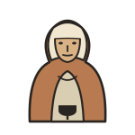
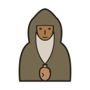
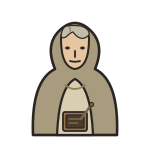
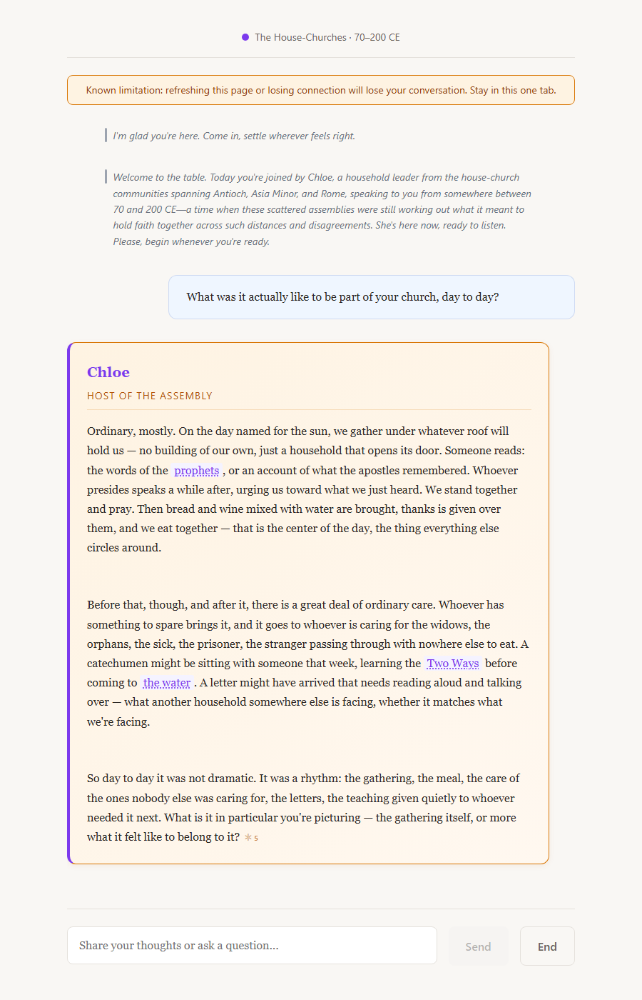
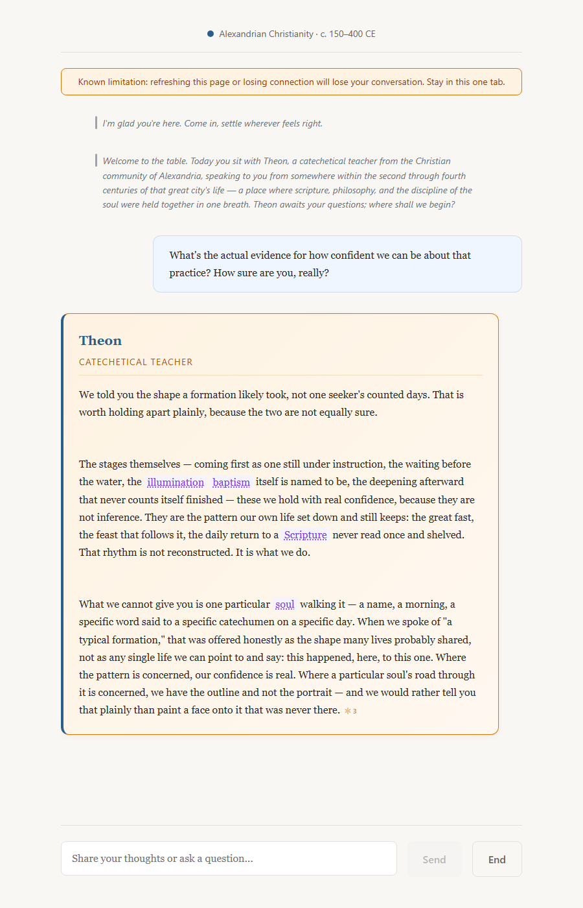

A First Look
What's coming to Church in Conversation
Ten slides through the actual designed experience — arriving, choosing a Christian tradition, sitting at the Table, checking every source, and closing well. Some of it is live in the pilot today; some is designed and not yet built. Each slide says which, plainly.
Click the arrows, tap either side of a slide, or use ← / →.
1 · Overview
Twenty centuries of the Church. One table. A chair pulled out for you.
This is a walk-through of the experience as it's actually designed — the same journey the pilot testers are seeing take shape, screen by screen. Where a feature is live today, it's marked live. Where it's a locked design waiting on engineering time, it says so.
Use the controls below to move through it.
2 · Arriving Designed for Phase 1
Three doors in, none the "right" one
"Come and join us at the Table."
Door 1
Start with your question
Door 2
Build your own table
Door 3
Guided onboarding
The front door offers three equal ways in — ask a real question first, pick your own traditions, or let the Facilitator walk you in a step at a time. None is presented as the default; whichever fits how you actually showed up is the right one.
Today's pilot opens straight to choosing a tradition (Door 2) — the three-door threshold above is the designed target for the next build phase.
3 · Choosing a tradition Live in the pilot
Five living traditions, seated one at a time

Scattered Churches
Desert
BethlehemChoose one tradition for a Deep Interview, or seat up to three for a Compare Traditions conversation — the seating is emergent, so the wording on the Begin button updates itself as the tray fills. Nothing seats a table except pressing Begin.
Update, 2026-08-28: both are live in the pilot today — one tradition for an Interview, or two to three seated together at a Table. The Table is convened in the app's own Table field (with guidance on which voices sit well together), so this slide's inline tray shows the original design intent rather than today's exact picker — the intent itself is now real.
4 · The Living Table Its own build increment
A seat held for you, the whole time
Each seated tradition sits at the table as its own locked emblem — solid and present the whole time. The scene is composed once and holds still; the only cue is a printed nameplate turning dark when that voice has the floor, and reverting when it's done.
The icons and table geometry are built and locked. Wiring the live scene into the app — so it responds to who's actually speaking — is its own upcoming build increment, sequenced after the transcript and role-selector work.
5 · The conversation Increment 1 — not yet merged
The shape of an actual conversation

This is a real, unedited exchange from the actual running app — asked live, answered live, screenshotted as it rendered. The transcript reads like a document: a name above flowing prose, left-justified, no bubbles. The Facilitator speaks centered and italic; each Representative gets a small-caps name label above their answer; your own words carry a quiet "You" label.
This long-form layout, along with the table bar shown above it, is designed and implementation-ready — queued as the next merge, not live in the pilot yet (which still shows the earlier bubble-style transcript).
6 · Citations & confidence Citations live · panel designed
Sourcing you can actually check, before you ask

A real, unedited exchange with Theon of Alexandria — asked directly how sure he really is, he draws his own line between what's confidently known (the shape of a pattern, lived and repeated) and what isn't (one particular person's story, which he won't invent). A dotted underline marks a term worth knowing; hovering (or tapping) shows a short definition, and clicking through opens the full entry alongside the conversation, always visible. The ✦ mark works the same way for citations: hover for the short form, click for the source in full.
Inline citations are already live in the pilot. The two-depth hover/click popover-and-panel grammar shown here is designed and queued for the same upcoming build pass as the long-form transcript.
7 · Every kind of sourcing, the same three steps Markers live · hover/click panel designed
See it, check it a little, check it all the way
Pachomius gathered his brothers into a shared koinonia.
Tier 3 · click "Full entry →" opens the complete lexicon record: every source it's drawn from, and how confidently it's known.
Antony heard the Gospel read aloud one ordinary day. ✦
Tier 3 · click opens the full source passage and how it's classified — documented, inferred, or silent.
“A knowing which leaves the knower unaltered is no knowing at all.” ✦
Tier 3 · click opens the exact citation in the same panel every other source uses — one pattern, learned once, applied everywhere.
Every claim is tagged, plainly: DOCUMENTED · INFERENCE · SILENT.
Tier 3 · click opens the full confidence record behind that claim — nothing is ever hidden, only labeled honestly.
Tier 1 is the marker itself — a dotted underline for lexicon, the ✦ mark for a story or a direct quote, a plain confidence tag for research transparency. All four content types share the exact same three-tier grammar, so a participant learns it once and it applies everywhere sourcing shows up.
The Tier-1 markers are already live in the pilot. The Tier-2 hover/tap popover and Tier-3 click-through panel shown here are designed and queued for the same build pass as the long-form transcript (slide 5).
8 · Comparing traditions at once Designed — seating live
Three voices at the same table, each still its own
Seat two or three traditions at once and ask the same question of each — a house-church host, a desert elder, and an Alexandrian teacher, each answering from its own record, in its own voice. Each keeps its own name, its own sourcing, its own silences.
Correction, 2026-08-25: this is the opposite of true today — seating more than one tradition is NOT possible in the pilot's picker (never removed, just never built; the pilot seats one tradition per session by design). The seated Living-Table scene shown here, and the per-voice nameplate cue, ship with the Living Table's own build increment (slide 4), which this is a preview of, not a description of the current pilot.
9 · Closing well Built · merge-gated
An ending that reads like a comma
Closing unfolds one beat at a time, each skippable, ending in an open door rather than a verdict on what you should have gotten out of it.
This closing sequence is fully built and tested; it's held back from the live pilot only by the project's own rule that nothing merges mid-pilot — it lands with the next invitation wave.
10 · One more thing, coming later Concept — designed, not yet built
Walking through one true moment, not just talking about it
This is a real, decided concept, not a promise with no plan behind it — and it isn't built yet. The existing early draft is getting real content work before anyone sees it. Consider this a teaser, not a preview.
11 · Where things actually stand
What's live, what's designed, what's next
- Choosing & seating traditionsLive
- Inline citationsLive
- Long-form transcript & table barQueued next
- The Living Table sceneOwn increment
- Closing sequenceBuilt, merge-gated
- Three-door arrivalDesigned for Phase 1
- Hosted Tour (a walked-through scene)Concept, coming later
Nothing above is presented as more finished than it is — the same honesty the Table itself uses about its own sources. If this is the kind of thing you'd want to help us test before anyone else sees it, we'd genuinely welcome you.